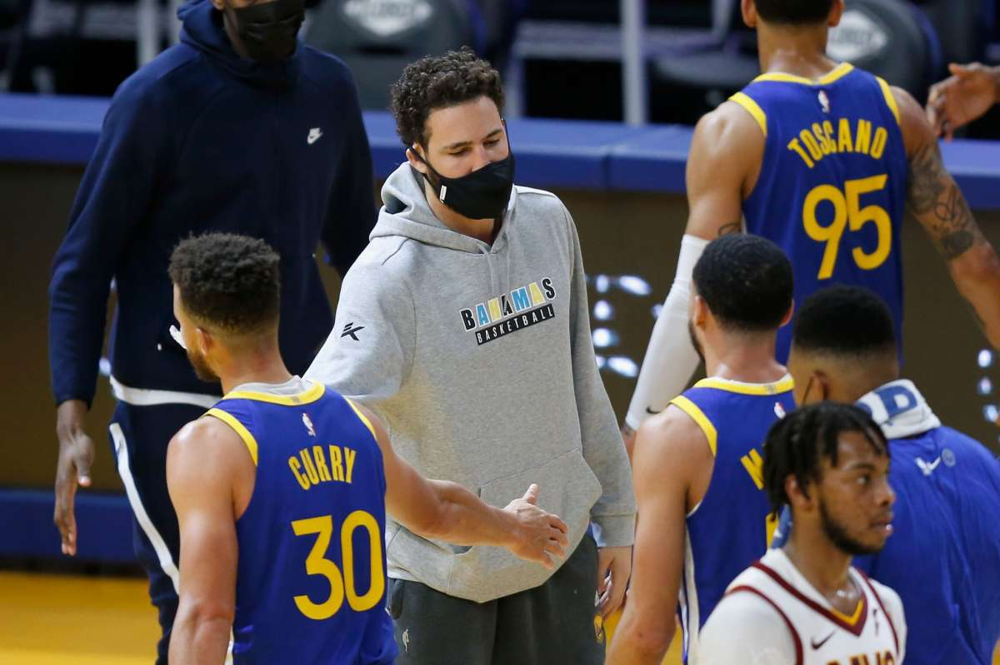

On Instagram Live boat trip, Warriors' Klay Thompson opines about the monstrosity that is Alcatraz
Alex Shultz
Date
News
Details
2019
Torn cruciate ligament
Game 6 against the Raptors
2020
Achilles tendon tear
During training
2021
Warriors missed the playoffs
Thompson hopes to make a comeback next season
Perhaps for a moment — maybe even just this story — the Stick to Sports crowd and the rest of us can come to a truce
and recognize that Alcatraz was/is very much an indefensible monstrosity.
The infamous secluded prison was formally shut down in 1963 due to its inhumane conditions, bloated costs and bevy of
extremely dangerous escape attempts. It remains an eyesore to this day, which Golden State Warriors guard Klay Thompson mentioned
while riding around on his boat on Saturday.

Thompson, who missed the last two seasons due to an assortment of serious injuries, was in good spirits while broadcasting to Instagram
Live viewers on the high seas. He vibed out to some Drake and Playboi Carti, talked about how much he misses hooping and playing in front
of fans, and set his goals for next season (50% shooting overall, 40% shooting from 3-point range, 90% from the free throw line). And then he
spotted Alcatraz in the distance.
"Look at Alcatraz," he said. "America, we're funny. Why do we build these terrible places on such beautiful pieces of land?"
Dubs in-depth: Klay Thompson shares what his goals are for next season
1
Expectations will be different for the Golden State Warriors next season. Once Klay Thompson injured his Achilles last November, no one expected the Dubs to be a championship contender.Thompson hasn’t played an NBA game since June of 2019. General manager Bob Myers says the plan is to have the five-time All-Star return to the lineup early next season.Along with Thompson, Stephen Curry and Draymond Green will try and lead the Warriors back into title contention. We don’t know what to expect from Thompson next season. He will have missed roughly 2.5 years of game action.
2
But Klay is confident he will be close to the same player he was before suffering the two serious injuries. Thompson went on Instagram live while he took his boat out for a ride in the Bay. He was asked by a fan how many points per game he will average next season, and one follower suggest 28 points per game (h/t NBC Bay Area).
“Twenty-eight points per game?! That’s a lot man,” Thompson said. “I’m going to take a dub and some great defense, how about that? Fifty, 40, 90, that’s the goal.”
Thompson later said all he wants to do is help Golden State win some games.
“How many points am I going to average next year? You know, I’m not going to put an expectation on it. I just want to be an efficient player. I want to have a positive impact on the hardwood. That real plus-minus stuff. That analytical stuff, you feel me?”>
3
The good news is that Andrew Wiggins’ presence on the roster will take some pressure off Thompson on the defensive end. Before he was injured, Klay routinely guarded the opposing teams’ best player. With Wiggins proving he can handle his own defensively, the Warriors will be able to take their time getting Thompson back into game shape.
Thompson has played eight seasons for the Warriors, averaging 19.5 points per game and shoots 41.9 percent from beyond the arc. With Thompson and Curry back on the court together, Golden State should once again have one of the most potent offenses in the league.
What do you think are realistic expectations for Thompson once he returns?